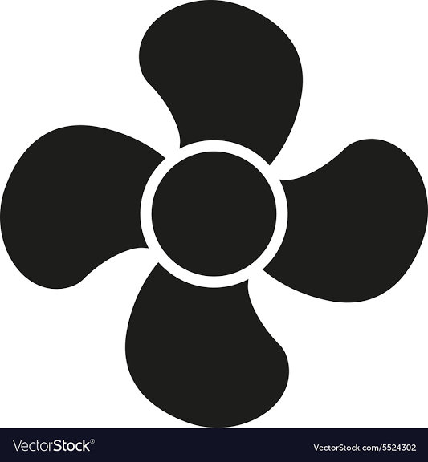

<ion-content>

    <div class="ion-fan-icon">
        
    </div>

    <div class="first-buttons">
        <ion-button shape="round" color="dark" size="large" class="mb-1" expand="full" routerLink="/visitar">VISITAR</ion-button>
        <ion-button shape="round" color="dark" size="large" class="mb-1" expand="full" routerLink="/entrar">ENTRAR USANDO CONTA</ion-button>
        <ion-button shape="round" color="dark" size="large" class="mb-1" expand="full"routerLink="/cadastrar">CADASTRAR</ion-button>
    </div>

</ion-content>
